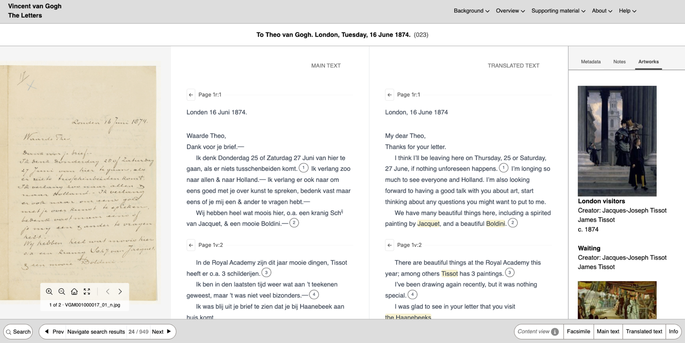

Systeem voor vier eeuwen archief:
Hoe het Huygens Instituut Van Gogh, Mondriaan en de VOC in dezelfde digitale omgeving krijgt
Wie zoekt in de digitale collecties van het Huygens Instituut, doorkruist al snel miljoenen aantekeningen verspreid over vier eeuwen Nederlandse tekst. Brieven van negentiende-eeuwse kunstenaars, zeventiende-eeuws koloniaal bestuur, twintigste-eeuwse vakbondsgeschiedenis. Dat dit allemaal in één doorzoekbare omgeving samenkomt, is het werk van team lead bij Digital Infrastructure (DI) Hennie Brugman en zijn collega's.
Veel onderzoeksprojecten van het Huygens Instituut naar historische bronnen begonnen jarenlang op dezelfde manier: een eigen website, een eigen zoekvenster, eigen knoppen, eigen logica. De brieven van Van Gogh zaten in een ander systeem dan die van Mondriaan, ook al lazen ze elkaars werk. Onderzoekers moesten per collectie opnieuw uitzoeken waar wat stond.
Collecties kunnen als één geheel worden doorzocht
Brugman en zijn team wilde daar van af. "Er zijn heel veel vormen van verrijkte tekstcollecties", zegt hij. "We willen niet bij elk project opnieuw met al die formaten worstelen." Zijn team koos voor een andere aanpak. Ze brengen al het materiaal terug tot drie basisingrediënten: een scan van het origineel, de leesbare tekst die uit die scan is gehaald, en daarbovenop een grote hoeveelheid kleine, gestandaardiseerde aantekeningen. Zo'n aantekening, een annotatie, wijst een stukje tekst of een plek op een scan aan en zegt erbij: dit is een persoonsnaam, dit is een locatie, dit is een scheepsnaam.
Het systeem dat al die annotaties bewaart en doorzoekbaar maakt, heet AnnoRepo. Dezelfde bouwsteen zit onder de digitale brieveneditie van negentiende-eeuwse kunstenaars én onder de GLOBALISE transcription viewer, het project rond het zeventiende-eeuwse VOC-archief. Doordat alles op precies dezelfde manier is opgebouwd, kunnen collecties die vroeger los van elkaar stonden nu als één geheel worden doorzocht. Wie op 'Batavia' zoekt als plaatsnaam, krijgt de stad. Wie zoekt op 'Batavia' als scheepsnaam, krijgt het schip. Die onderscheiden zijn mogelijk omdat elke verwijzing gelabeld is, of dat nu met de hand is gedaan door editeurs of automatisch door software.
Aanwijzen, niet kopiëren
Veel onderzoeksprojecten downloadden vroeger hele datasets bij erfgoedinstellingen om er elders mee verder te werken. Het Nationaal Archief publiceerde scans, een onderzoeksgroep haalde ze op, voegde kennis toe, en zette die verrijkte versie op een universiteitsserver. Jaren later zwierven er overal kopieën van die data rond, regelmatig in een verouderde versie.
"Dan krijg je hele mooie verrijkte data, maar het is een snapshot van een bepaald moment", zegt Brugman. "Vijf jaar later loopt er gewoon ergens een oude kopie van die data rond." Voor erfgoedinstellingen die de betrouwbare bron wil blijven, is dat lastig. En voor onderzoekers die op die data voortbouwen, is het een probleem, want een wetenschappelijke conclusie kan berusten op zes jaar oude gegevens.
De Huygens-aanpak laat de bron staan waar die staat. Scans blijven bij het Nationaal Archief. De aantekeningen verwijzen er rechtstreeks naar terug, tot op het losse karakter of de pixel. Wat Huygens publiceert is een dunne maar gedetailleerde laag boven op het origineel, met daarbij vastgelegd wie hem maakte, hoe en wanneer. "Wij zijn verantwoordelijk om aan te geven hoe we dat hebben gemaakt", zegt Brugman. Zo weet je altijd waar de informatie vandaan komt.
Wat er nu kan, en wat er komt
De schaal van REPUBLIC, het project rond bijna twee eeuwen besluiten van de Staten-Generaal, geeft een goed beeld van wat dit systeem aankan. "Het gaat om 700.000 individuele besluiten", zegt Brugman. "Binnen die resoluties komen we de nodige namen tegen, zeg tien of vijftien per resolutie. Maal 700.000, dan weet je over hoeveel het gaat." Miljoenen annotaties, doorzoekbaar tot op het karakter.
Aan het andere eind van het spectrum staan de kunstenaarsbrieven, waar editeurs nog brief voor brief detailwerk doen. De meest voor de hand liggende laag aantekeningen die ze aanbrengen, is die van de zogeheten Named Entities, een markering die zegt: dit woord is een persoonsnaam, dit een plaatsnaam, dit een scheepsnaam, dit getal is een datum. Voor de grote collecties van REPUBLIC en GLOBALISE wordt dat herkennen tegenwoordig grotendeels door software gedaan, met technieken die Named Entity Recognition heten en die de laatste jaren door AI flink vooruit zijn geholpen. Maar bij een editieproject zoals de kunstenaarsbrieven gaat het verder. Editeurs voegen ook context toe: wie is deze persoon precies, wat is zijn relatie tot de schrijver, naar welk kunstwerk wordt hier verwezen. "Editeurs gaan heel erg in detail door brieven heen", zegt Brugman. "Die zeggen: dit is een collega-kunstenaar van Vincent van Gogh, en dit is de informatie die we daarover hebben." Voor AnnoRepo zijn al deze aantekeningen, van een kort labeltje tot een rijk commentaar, gewoon weer een annotatie, in hetzelfde formaat opgeslagen en via dezelfde weg doorzoekbaar. Daardoor kunnen de Mondriaanbrieven en de Van Goghbrieven nu ook als één gezamenlijke collectie worden doorzocht. De volgende stap is dat ook anderen aantekeningen kunnen toevoegen: collega-onderzoekers, studenten, vakgenoten. Brugman ziet er veel mogelijkheden in. "Ik denk dat daar in potentie nieuwe manieren van online wetenschappelijk samenwerken rond een collectie uit kunnen voortkomen." Het is nog een langetermijnwens, maar de technische basis ligt er al.

AnnoRepo is heel veelzijdig
AnnoRepo is open source en wordt al ingezet buiten de eigen projecten. Er is bijvoorbeeld al contact met een digital-humanities-team in Vlaanderen. "Het is een implementatie van een webstandaard", zegt Brugman. "Als je maar web-annotaties hebt, kun je het inzetten."
Wat onder de motorkap zit, reikt daarmee ver buiten de Hollandse archieven. Want voor AnnoRepo maakt het niet uit waar een annotatie aan vasthangt: een paar karakters in een tekst en een vierkant van pixels in een afbeelding zijn allebei gewoon "een plek op een bron". En dat opent de deur naar veel meer dan brieven en resoluties.
Een onderzoeker kan historisch kaartmateriaal annoteren, plaatsen op oude kaarten aanwijzen en er informatie aan koppelen. Audiovisueel materiaal is in principe ook mogelijk. De workflow is steeds dezelfde. Een configuratiebestand opstellen, een pipeline laten lopen, en aan het eind staat er een doorzoekbare website. "Dat is een beetje de heilige graal", zegt Brugman. "Zo min mogelijk handwerk per collectie." Waar elke nieuwe editie ooit een eigen website, een eigen zoekvenster en een eigen logica meebracht, schuift de volgende collectie die het Huygens Instituut online brengt nu eenvoudig mee in een infrastructuur die er al staat. Van Gogh en Mondriaan lazen elkaars werk al, nu staan ze eindelijk ook in dezelfde digitale omgeving.